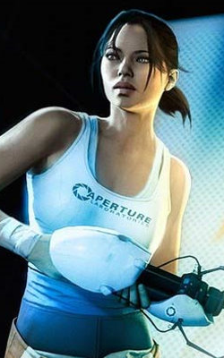
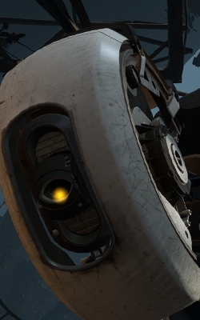
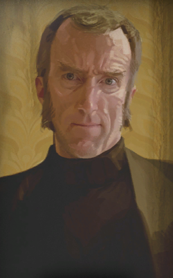

Lühikene sissejuhatus mängu Portal ja Portal 2Sissejuhatus: mis on mängu sisu?Portali seeria jooksul on mängija Chelli rollis, kes on noor naine lõksus Aperture Science kompleksis. Chell on sunnitud läbima teste, mis varieeruvad raskustasemes. Testikambrid on disainitud tehisintellekti GlaDOSe poolt, kes on muutunud iseteadlikuks. Varajastes testikambrites antakse Chellile käes hoitav Portal seade (kasutatakse ka nime Portal püstol), mis on Aperture Science firma poolt loodud tööriist. See lubab Chellil luua portaleid, mis on justkui väravad omavahel ja võimaldavad Chellil kiiresti läbida alasid ja jõuda kohtadesse, kuhu tavapäraselt ei oleks võimalik sattuda. Enesetestiks mine siia
Avalda arvamust lehe kohtaKes on tegelased?Chell |
|||
|  | Chell on testisubjekt (#1, eelnevalt #1498) Aperture Science tehisintellekttoetusel töötavas keskuses ja on seotud Portali seade testimisega. Ta on tumm peategelane Portalis ja Portal 2's. Väga vähe on teada tema minevikust peale tema võimaliku hülgamise, kui ta oli just sündinud ja tema kangekaelse tahtmise ellu jääda. Läbi seeria on tema vaenlaseks tehisintellekt ja keskuse järelvaataja GlaDOS, kes suhtub temasse vaenulikult, kui Chell lahendab ülesandeid testikambrites. Mängu lõpu poole hakkab Chell Portal seadet kasutama selleks, et pääseda ohtlikest olukordadest keskuses, et ellu jääda ning põgeneda. | ||
GlaDOS |
|||
|  | GlaDOS on Aperture Science keskuse põhiline tehisintelligents, mis kontrollib ja juhib keskuse toimimist. GlaDOS juhib kogu keskuse disaini ja kontrolli keskuse tehisintelligentsi kambrist ja suudab liigutada ja nihutada keskuse kambreid. GlaDOSe iseloom põhineb naisel ja ta on põhiline paha tegelane Portalis ja Portal 2's. Portal 2 teises poolest saab temast sinu kaaslane. Mängu co-operative versioonis on GlaDOS Atlase ja P-body testide ülevaataja. GlaDOSele annab hääle ooperilauljanna Ellen McLain. | ||
Cave Johnson |
|||
|  | Cave Johnson on Aperture Scienci asutaja, mis arenes välja firmadest nagu Aperture Fixtures ja Aperture Science Innovators. Cave Johnson ilmus esimest korda kasutajanime ja salasõna kujul Rattmann'i urkas, kui Portali sündmused toimused ja seda infot viimistleti Portal ARG jooksul. Portal 2's sai Cave Johnsonist üks põhilisi tegelasi eelnevalt lindistatud heliklippide teel, mis varieeruvad hilis neljakümnendatest kuni kaheksakümnendateni. Tema praegune staatus ja asukoht on teadmata, aga ta on oletatavalt surnud, kuna ta on viibinud mürgiste kemikaalide juures, kui nad kuu pealt saabunud kivisid töötlesid. Cave Johnsonile annab hääle ameerika näitleja J. K. Simmons. | ||
Portaliga seotud teosed:
|
|||
| Ava Enesetest selles aknas | |||